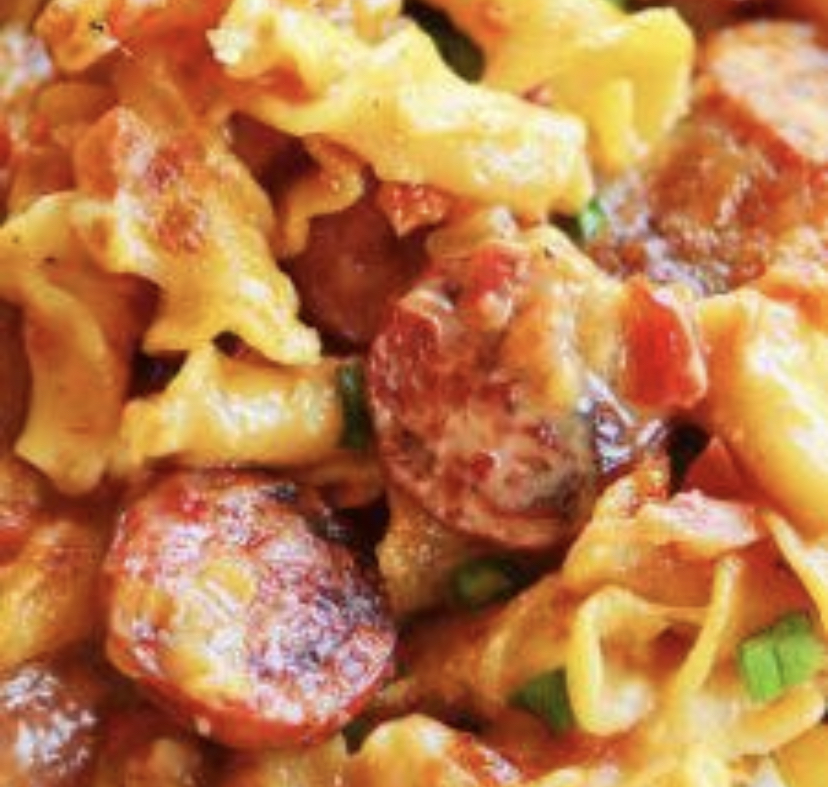

Spicy Sausage Pasta

Ingredients
- 1 tsp Avocado Oil
- 1 lb Smoked Sausage
- 1.5 cups Diced Onion
- 2 cloves Minced Garlic
- 2 cups Chicken Broth
- 1 (10oz) can Ro-Tel Tomato and Mild Green Chiles
- 1/2 cup Heavy Cream
- 8 oz Bowtie Pasta
- 1 cup Shredded Monterey Jack Cheese
- 2 Diced Green bell Peppers
Directions
- Add 1 tsp avocado oil to an oven-safe skillet over medium-high heat.
Add sausage and onions and cook until ligtly browned, about four minutes.
Add garlic and cook until fragrant, about 30 seconds.
- Add broth, tomatoes, heavy cream, pasta, and stir. Bring to a boil,
cover skillet, and reduce heat to medium-low. Simmer until pasta is
tender, about 15 minutes.
- Remove skillet from heat and stir in 1/2 cup of cheese, top with
remaining cheese. Broil until cheese is melted, spotty brown, and
bubbly.
Contact Me
Email Me!
Recipe Origin